// Contexte
Dans ce challenge TryHackMe, je me retrouve face à une machine Windows Server 2016 qui semble avoir été compromise. Ma mission est de mener une investigation forensique complète en reconstituant la chaîne d'attaque — de l'accès initial à la mise en place du C2 — en utilisant uniquement les outils natifs Windows et les journaux d'événements disponibles sur la machine.
systeminfo. Cette commande native liste en détail les informations matérielles et
logicielles du système, y compris le nom et la build de l'OS.
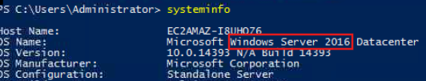
Event ID 4624, qui
correspond à chaque ouverture de session réussie. Je trie les résultats par date décroissante pour
isoler la toute dernière entrée.
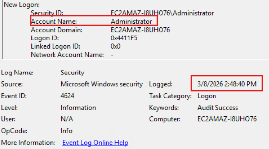
net user John | select-string "Last" pour extraire uniquement la ligne contenant la date
de dernière connexion.
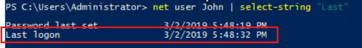
regedit) et je navigue jusqu'à la clé
HKLM\SOFTWARE\Microsoft\Windows\CurrentVersion\Run. C'est l'un des emplacements
classiques où les logiciels — ou les malwares — s'enregistrent pour s'exécuter automatiquement au
démarrage de Windows.
BadrClient qui pointe vers un script avec une adresse IP codée en
dur : 10.34.2.3. Il s'agit clairement d'un mécanisme de persistance posé par
l'attaquant.
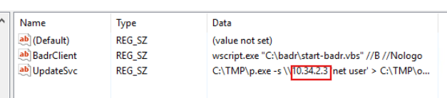
net localgroup
administrators dans PowerShell pour lister tous les membres du groupe Administrateurs de la
machine.
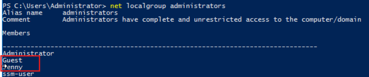
Clean file system. Le nom est conçu pour passer inaperçu lors d'un
audit rapide, mais ses propriétés révèlent une action malveillante.
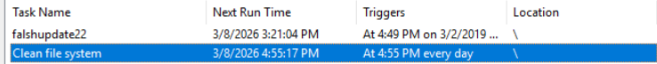
Clean file system, je dois déterminer exactement ce qu'elle exécute. L'action
derrière une tâche planifiée malveillante est souvent le cœur du mécanisme de Command & Control.
nc.ps1 -l
1348 — un script PowerShell qui ouvre un reverse shell en
écoute sur le port 1348, permettant à l'attaquant de reprendre la main sur la
machine à tout moment.
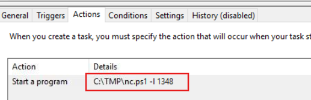
net user Jenny pour
consulter les informations de ce compte, notamment la date de dernière connexion.
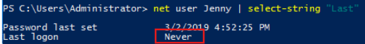
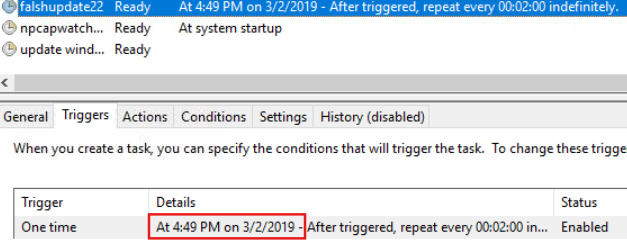
Event ID 4672 — « Attribution de privilèges spéciaux à une nouvelle session ».
Cet événement est généré à chaque fois qu'un compte avec des droits sensibles ouvre une session.
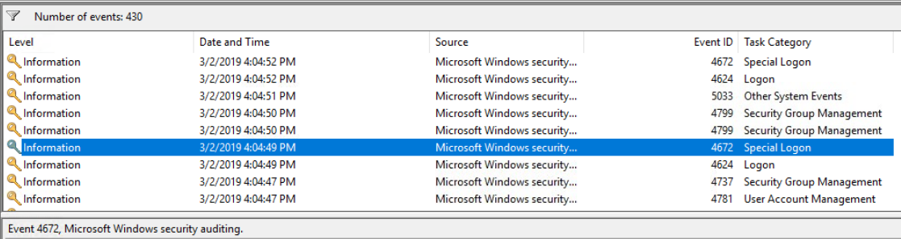
Event ID 1116, qui correspond aux
détections de malware par l'antivirus. Windows Defender peut avoir déclenché une alerte même si
l'exécution a quand même eu lieu.
HackTool:Win32/Mimikatz.l sur le système. Mimikatz est l'outil
offensif de référence pour extraire les hachages NTLM et les mots de passe en clair directement
depuis la mémoire du processus LSASS.
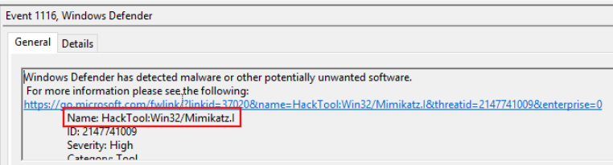
C:\Windows\System32\drivers\etc\hosts. Ce fichier est souvent modifié par des malwares
pour rediriger le trafic DNS de domaines légitimes vers des serveurs contrôlés par l'attaquant,
sans que la victime ne s'en aperçoive.
google.com est redirigé vers l'adresse IP 76.32.97.132, qui correspond
au serveur C2 de l'attaquant. Toute requête vers Google depuis cette machine atterrit en réalité
sur l'infrastructure pirate.
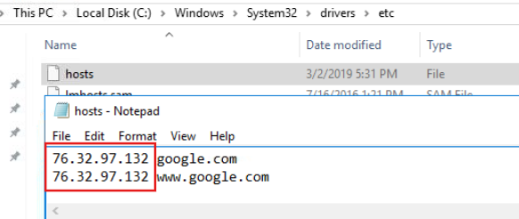
C:\inetpub\wwwroot, qui héberge les fichiers publiés par IIS. Je recherche des fichiers
inhabituels ou des scripts qui n'ont rien à faire dans cet espace.
b.jsp — un webshell Java Server Pages qui permet à quiconque connaît
son URL d'exécuter des commandes arbitraires sur le serveur directement via HTTP, sans aucune
authentification.
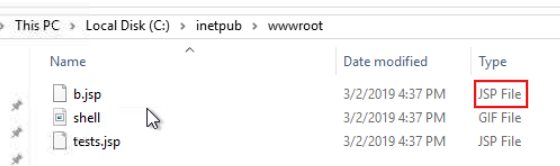
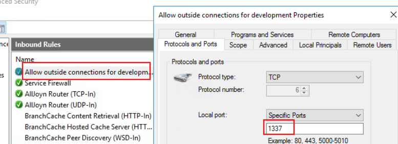
// Synthèse — Chaîne d'attaque
1. Accès Initial (T1505.003) : L'intrusion commence par la compromission du serveur web où
l'attaquant parvient à déposer un webshell b.jsp dans le répertoire IIS. Ce fichier lui offre
une exécution de commandes à distance sans la moindre authentification.
2. Vol d'Identifiants (T1003) : Une fois l'accès initial sécurisé, l'outil
Mimikatz est déployé sur le système pour extraire les hachages NTLM ou les mots de passe en
clair directement depuis la mémoire du processus LSASS.
3. Élévation de Privilèges (Event 4672) : L'attaquant consolide son emprise en obtenant les
droits d'administration à 4:04:49 PM le 3/2/2019. Il ajoute également les comptes
Guest et Jenny au groupe Administrateurs locaux.
4. Persistance Multicouche (T1547.001 & T1053.005) : Pour survivre à un redémarrage,
l'attaquant ancre sa présence à deux niveaux : la création d'une clé de registre BadrClient qui
s'exécute automatiquement au démarrage, et la mise en place de la tâche planifiée Clean file
system lançant un reverse shell via nc.ps1 sur le port 1348.
5. Command & Control (T1071) : La communication avec l'infrastructure pirate est assurée
par un DNS poisoning du fichier hosts redirigeant le trafic vers l'IP
76.32.97.132, et par une règle de pare-feu ouvrant le port TCP 1337 aux connexions
externes.